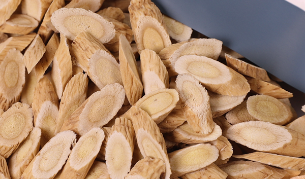
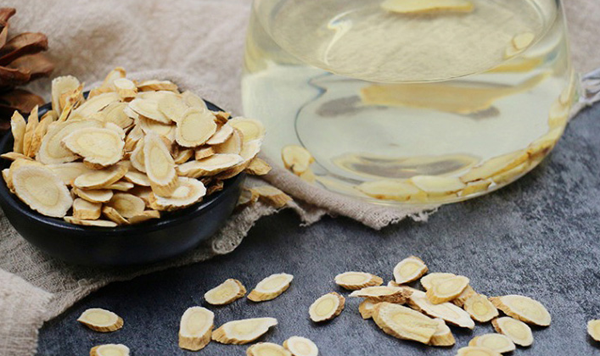
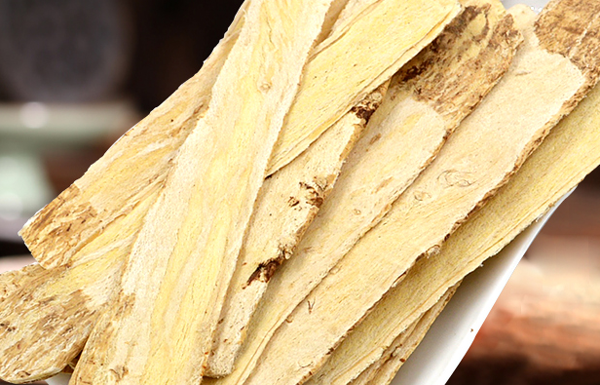

原文连接:https://www.daquan.com/post/12466.html
黄芪有着很好的滋补作用，甚至有平价人参这样的美称，由此可见黄芪是滋补身体非常好的药材。黄芪是滋补的药材，大家是不需要长期滋补的，所以黄芪泡水不需要长期喝。黄芪是中草药的一种，是药就有着一定的副作用，所以不能长期喝黄芪泡水。
黄芪泡水不能长期喝
1、滋补的药不能长期喝

黄芪是滋补的药物，滋补的药物是都不能长期使用的。这是因为滋补的药大多性温，黄芪性味是微温，长期使用也会引起上火的。黄芪除了有滋补的功效外还有着降血糖、降血压、降血脂的作用。黄芪是一个价钱便宜并且功效很多的中草药，但是喝多了会容易上火引起更多的疾病，所以不建议长期喝。
2、黄芪是药不适合长期喝

黄芪是中草药中的补气药，是不能长期泡水喝的。这是因为是药物就有着一定的副作用，就像俗语说的“是药三分毒”一样，药物最好不要长期吃，吃多了毒性在体内也越多。黄芪是药，所以不适合长期泡茶喝。但是有一种情况黄芪是可以泡茶喝的，那就是治病补气，这是因为药效主要是治疗疾病，毒性也和疾病互相抵消掉了，所以治病是可以长期喝黄芪的。
3、治疗疾病长期喝的使用方法

如果是用黄芪治病的，医生叮嘱需要长期用黄芪泡水来喝的，需要长期喝。但是要注意长期喝的量要根据医生的医嘱来喝，如果长期喝量一直超标，不仅治不了疾病，还会导致其他疾病的产生。
黄芪泡水怎么喝
1、喝一段时间后停下来
黄芪泡水的饮用方法要注意，如果是养身来进行滋补身体使用黄芪泡水的，喝用黄芪泡水最好在喝了一段时间后注意停下来一段时间后再继续饮用。黄芪水是不适合长期饮用的，如果用来滋补或者降血糖以及增强免疫力的时候，最好在喝了一段时间后停下来，然后过一段时间后继续饮用。
2、每天什么时候喝最好
黄芪泡水一天里什么时候饮用效果最好，那就是每天早饭之后饮用，这是因为早饭之后饮用黄芪水可以帮助将血压、降血糖。黄芪有增强抵抗力补气的作用，早上起来饮用可以帮助预防一天里外界的邪气，在秋冬时饮用黄芪泡水还能预防感冒。
3、根据医嘱喝黄芪水
黄芪需要长期泡水饮用的药注意根据医生的医嘱来饮用，这是因为长期需要饮用的人是用来治病的，和黄芪泡水就是吃药。吃药的药物的剂量和药物的药量是要根据医嘱使用。
4、什么时候不能喝黄芪水

不管是长期喝黄芪水还是短期喝黄芪水的人，都有停下来不能喝的时候。像长期喝黄芪水的人要根据医生的要求进行停药，如果是未绝经的年轻女性，要在月经来时停止使用药物。滋补身体使用黄芪养身的人要注意出现上火的症状时要立马停止喝黄芪水，还有外感病邪引起的疾病后像风热感冒后最好也不要继续喝黄芪水。
结语：通过上文的介绍，相信大家都了解了关于黄芪泡水可以长期喝吗的答案，答案就是不行。黄芪是很好的药材，但并不能长期喝，长期喝黄芪水可能会引起上火以及其他疾病，所以大家要注意不能长期喝黄芪水。